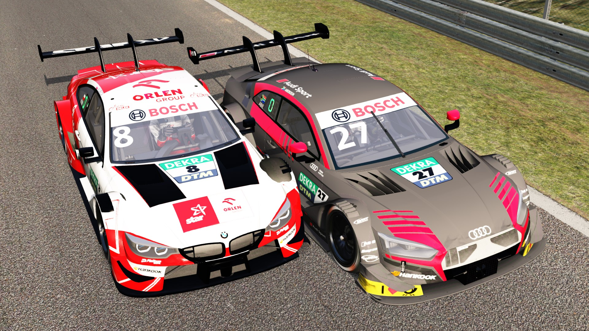

A február 18.-i belga nagydíjon az utolsó körre úgy alakult ki a versenyhelyzet, hogy Hegedűs Csaba, Reinhardt Benjamin és Nagy Attila egymás mellé kerültek. Tartották a pozíciót az Eau Rouge - Raidillon kanyarkombinációban, azonban a Kemmel egyenesben Nagy Attila elképesztő manővert hajtott végre. Attila miután a Raidillon végére ért, a Kemmel egyenes törésében megkísérelt ütközéssel hatni a versenyzőkre, ráhúzta a kormányt a tőle jobbra autózó Reinhardt Benjaminra, aki egy korrekciót elvégeztve visszarántotta a versenyszemélygépjárművet, mi által Nagy Attila beleütötte Hegedűs Csabát a szalagkorlátba, aki így dobogós esélyeit elvesztve csak a 10. helyen tudott célba érni.  Nagy Attila a verseny utolsó körében továbbá többször az egyenes közepén a falba kívánta terelni Reinhardt Benjamint, aki a verseny után kifejtette nemtetszését az incidenssel kapcsolatban. A pilóták nem kívántak a sajtónak nyilatkozni, hiszen a közvetítés technikai okok miatt elmaradt. Hegedűs Csaba és Reinhardt Benjamin óvást nyújtottak be az agresszív pilóta ellen, amelynek cikkünk írásáig nincs eredménye. Hamarosan jelentkezünk a részletekkel.
Március 11.-én a liga pilótái a hírhedt brit aszfaltcsíkon fognak versenyezni...
A 18 körös észvesztő csata után Zsidi Bálint győzelmet arat a Hungaroringen...
Előre nem látott teechnikai okok miatt a futamot halasztani kényszerült a vezetőség...